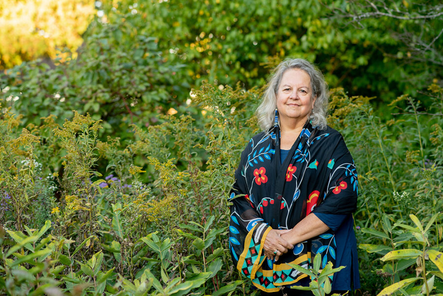

Robin Wall Kimmerer Virtual Talk
Join us for a virtual conversation between author Robin Wall Kimmerer and Sekile Nzinga followed by an audience Q&A.
Link to join via Zoom: https://saic-edu.zoom.us/j/86115343048
Robin Wall Kimmerer is a mother, scientist, decorated professor, and enrolled member of the Citizen Potawatomi Nation. She is the author of Braiding Sweetgrass: Indigenous Wisdom, Scientific Knowledge, and the Teachings of Plants, which has earned Kimmerer wide acclaim. Her first book, Gathering Moss: A Natural and Cultural History of Mosses, was awarded the John Burroughs Medal for outstanding nature writing, and her other work has appeared in Orion, Whole Terrain, and numerous scientific journals. Kimmerer’s newest book, The Serviceberry: Abundance and Reciprocity in the Natural World, is a bold and inspiring vision for how to orient our lives around gratitude, reciprocity, and community, based on the lessons of the natural world.
Kimmerer tours widely and has been featured on NPR’s On Being with Krista Tippett and in 2015 addressed the general assembly of the United Nations on the topic of “Healing Our Relationship with Nature.” Kimmerer is a State University of New York College (SUNY) Distinguished Teaching Professor of Environmental Biology and the founder and director of the Center for Native Peoples and the Environment, whose mission is to create programs which draw on the wisdom of both Indigenous and scientific knowledge for our shared goals of sustainability. In 2022, she was named a MacArthur Fellow.
As a writer and a scientist, her interests in restoration include not only restoration of ecological communities, but restoration of our relationships to land. She holds a bachelor of science in Botany from SUNY Environmental Science and Forestry, a master of science and doctorate in Botany from the University of Wisconsin, and is the author of numerous scientific papers on plant ecology, bryophyte ecology, traditional knowledge, and restoration ecology. She lives on an old farm in upstate New York, tending gardens both cultivated and wild.
Presented in partnership with SAIC’s Visiting Artists Program and Office of Campus Enrichment and Community Engagement on the occasion of SAIC’s Shared Read, Braiding Sweetgrass: Indigenous Wisdom, Scientific Knowledge, and the Teaching of Plants. Kimmerer will discuss her work with Sekile Nzinga, SAIC’s vice president of the Office of Campus Enrichment and Community Engagement.
This event will be live captioned by Communication Access Realtime Translation (CART) services. The auditorium is wheelchair accessible and hearing assisted devices are available. For additional access requests, visit saic.edu/access.
Image: Robin Wall Kimmerer. Photo by John D. and Catherine T. MacArthur Foundation